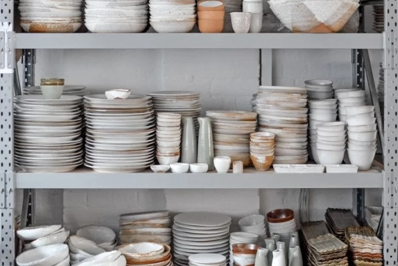

Every Sunday, the street is transformed into a bustle of foliage and
flowers. Everything from bedding plants to 10-foot banana trees are up
for grabs. The air is intense with the scent of flowers and herbs, and
the sound of barrow boys chanting “Everthin' a fiver”. The stallholders
either grow their own plants or import them from around the world.
What's On
The shops on Columbia Road will be open from 5 - 9pm on the four
Wednesdays before Christmas. This is the chance to enjoy the wealth of
creative and lovely gift ideas stocked by over 50 independent
retailers on Columbia Road without the Sunday crowds or having to
queue. Come and enjoy the festive atmosphere and get your Christmas
Shopping done at the same time.
Columbia Road Shops
Columbia Road is one of the few streets in the country composed of
sixty independent businesses. Small art galleries sit next to
cupcake shops, vintage clothes stores, English and Italian delis,
gardening and antique shops. There's also a wealth of great pubs,
cafés and restaurants.
Food & Drink
Pavilion Bakery
Gifts
Nom

Art & Galleries
Mason & Painter
Getting Here
Situated in the London borough of Tower Hamlets, the market is a
leisurely walk or cycle ride from any of the surrounding boroughs -
Islington, Hackney and The City of London.
Instagram
A celebration of Columbia Road Flower Market in the heart of the East
End